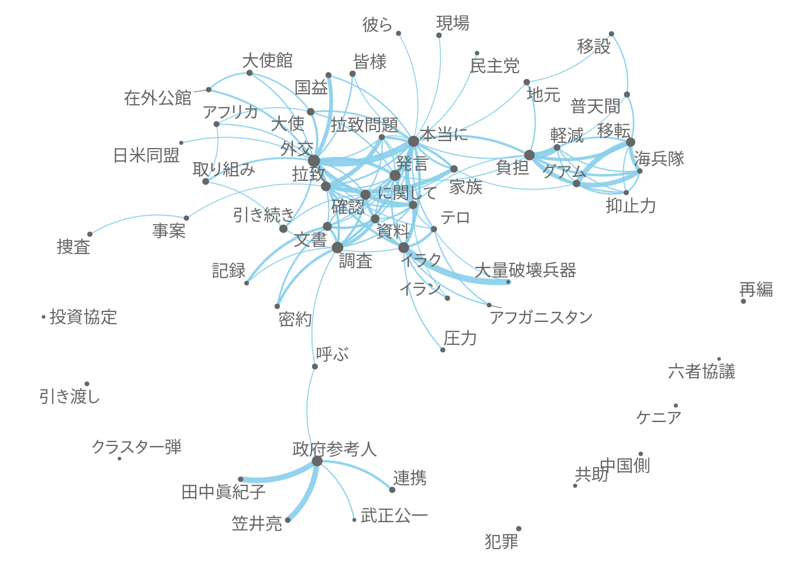

library(quanteda)ndoc(corp_full)## [1] 287298range(docvars(corp_full, 'date'))## [1] "1947-06-30" "2017-11-29"corp <- corpus_subset(corp_full, 1991 <= year & year <= 2010)日本語の分析では，形態素解析ツールを用いて分かち書きを行うことが多いが，quantedaのtokens()は，ICUで定義された規則に従って文を語に分割することができる．さらに，漢字やカタカナの連続的共起をtextstat_collocations()を用いて抽出し，tokens_compound()によって統計的に優位な組み合わせを結合すると，より質の高いトークン化を実現できる．textstat_collocations()を用いる場合は，事前にtokens_select()と正規表現で，対象とする語だけを選択する．この際，padding = TRUEとし，語の間の距離が維持されるように注意する．
toks <- tokens(corp)
toks <- tokens_select(toks, '^[０-９ぁ-んァ-ヶー一-龠]+$', valuetype = 'regex', padding = TRUE)
toks <- tokens_remove(toks, c('御', '君'), padding = TRUE)
min_count <- 10
# 漢字
toks_kanji <- tokens_select(toks, '^[一-龠]+$', valuetype = 'regex', padding = TRUE)
col_kanji <- textstat_collocations(toks_kanji, min_count = min_count)
toks <- tokens_compound(toks, col_kanji[col_kanji$z > 3,], concatenator = '')
# カタカナ
toks_kana <- tokens_select(toks, '^[ァ-ヶー]+$', valuetype = 'regex', padding = TRUE)
col_kana <- textstat_collocations(toks_kana, min_count = min_count)
toks <- tokens_compound(toks, col_kana[col_kana$z > 3,], concatenator = '')
# 漢字，カタカナおよび数字
toks_any <- tokens_select(toks, '^[０-９ァ-ヶー一-龠]+$', valuetype = 'regex', padding = TRUE)
col_any <- textstat_collocations(toks_any, min_count = min_count)
toks <- tokens_compound(toks, col_any[col_any$z > 3,], concatenator = '')dfm()によって文書行列を作成した後でも，dfm_*()と命名された関数を用いると分析に必要な文書の特徴を自由に選択できる．ここでは，平仮名のみもしくは一語のみから構成されたトークンをdfm_remove()によって，頻度が極端に低い語もしくは高い語をdfm_trim()によって削除している．
mt <- dfm(toks, remove = '')
mt <- dfm_remove(mt, '^[ぁ-ん]+$', valuetype = 'regex', min_nchar = 2)
mt <- dfm_trim(mt, min_count = 10, max_count = 0.1)textstat_keyness()は語の頻度を文書のグループ間で比較し，統計的に有意に頻度が高いものを選択する．ここでは，同時多発テロが発生した2001年以降に頻度が高くなった30語を示してある．
key <- textstat_keyness(mt, docvars(mt, 'year') >= 2001)
knitr::kable(head(key, 20))| chi2 | p | n_target | n_reference | |
|---|---|---|---|---|
| 政府参考人 | 1727.0920 | 0 | 2977 | 75 |
| 川口国務大臣 | 943.7712 | 0 | 1466 | 0 |
| 拉致問題 | 655.6230 | 0 | 1211 | 50 |
| 拉致 | 646.2821 | 0 | 1430 | 118 |
| 副大臣 | 615.1018 | 0 | 972 | 4 |
| 田中国務大臣 | 577.9621 | 0 | 898 | 0 |
| イラク | 541.4889 | 0 | 2524 | 584 |
| 麻生国務大臣 | 504.5649 | 0 | 784 | 0 |
| 松原委員 | 495.0716 | 0 | 976 | 55 |
| 資料 | 482.6915 | 0 | 2055 | 442 |
| グアム | 469.5773 | 0 | 801 | 18 |
| 武正委員 | 444.0500 | 0 | 690 | 0 |
| 東門委員 | 433.5980 | 0 | 686 | 3 |
| 笠井委員 | 418.3006 | 0 | 650 | 0 |
| 防衛省 | 384.1839 | 0 | 597 | 0 |
| アフガニスタン | 374.4927 | 0 | 664 | 21 |
| 小泉総理 | 348.7815 | 0 | 542 | 0 |
| 密約 | 330.5778 | 0 | 599 | 22 |
| に関して | 315.9214 | 0 | 2691 | 880 |
| 連携 | 311.9394 | 0 | 1253 | 256 |
上の表では，委員会出席者の名前が多く含まれるので，それらを取り除くと議論の主題が明確になる．
key <- key[!stringi::stri_detect_regex(rownames(key), '委員|大臣'),]
knitr::kable(head(key, 20))| chi2 | p | n_target | n_reference | |
|---|---|---|---|---|
| 政府参考人 | 1727.0920 | 0 | 2977 | 75 |
| 拉致問題 | 655.6230 | 0 | 1211 | 50 |
| 拉致 | 646.2821 | 0 | 1430 | 118 |
| イラク | 541.4889 | 0 | 2524 | 584 |
| 資料 | 482.6915 | 0 | 2055 | 442 |
| グアム | 469.5773 | 0 | 801 | 18 |
| 防衛省 | 384.1839 | 0 | 597 | 0 |
| アフガニスタン | 374.4927 | 0 | 664 | 21 |
| 小泉総理 | 348.7815 | 0 | 542 | 0 |
| 密約 | 330.5778 | 0 | 599 | 22 |
| に関して | 315.9214 | 0 | 2691 | 880 |
| 連携 | 311.9394 | 0 | 1253 | 256 |
| 軽減 | 300.1987 | 0 | 766 | 87 |
| 近藤 | 296.2273 | 0 | 504 | 11 |
| 政務官 | 293.9668 | 0 | 481 | 6 |
| 犯罪 | 290.6333 | 0 | 946 | 155 |
| 家族 | 288.6400 | 0 | 1082 | 207 |
| 民主党 | 281.9033 | 0 | 708 | 78 |
| ロードマップ | 266.9815 | 0 | 419 | 1 |
| 移転 | 250.8836 | 0 | 1064 | 228 |
fcm()によって作成した共起行列に対して，textplot_network()を用いると語の関係が視覚化でき，文書の内容の全体像を容易に把握できる．
feat <- head(rownames(key), 100)
mt_col <- fcm(dfm_select(mt, feat))
size <- sqrt(rowSums(mt_col))
textplot_network(mt_col, min_freq = 0.95, edge_alpha = 0.9, vertex_size = size / max(size) * 3)